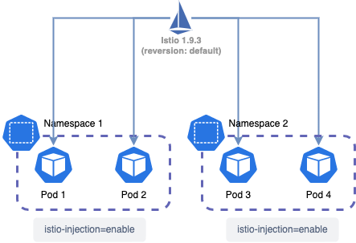
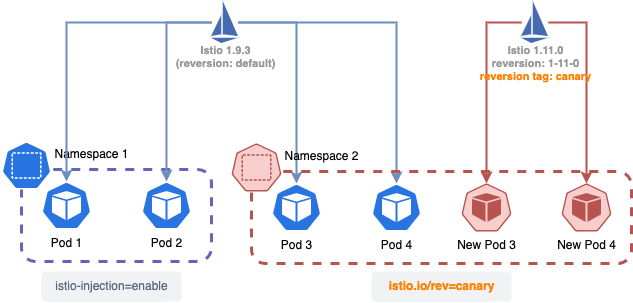
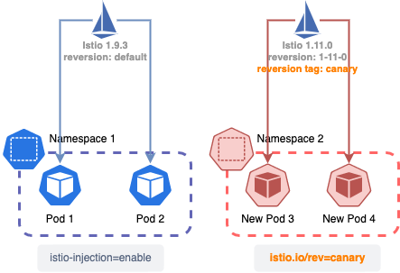

There’re three different ways of upgrading istio introduced in the official documentation: canary upgrade, in-place upgrade, and upgrade with helm. In this article we are going to talk about the canary upgrade which is also recommanded by the istio official document.
Introduction
Istio current version: 1.9.3
Istio target vesion: 1.11.0
According to the info offered by istio official document, in-place upgrades requires user to upgrade istio to EACH intermediate minor release, while canary upgrade supports jumping across TWO minor versions(For example, from 1.9.3 to 1.11.0 is jumping across two minor versions)
So, to upgrade istio from 1.9.3 to 1.11.0 this time, I chose to use canary upgrade instead of in-place upgrades. Also, I tend to avoid downtime during this upgrade with this method.
First of all, we can discuss how does canary upgrade work first and then show the whole process of the upgrade.
Canary upgrade

At the beginning there’s only istio 1.9.3 installed on the custer, and all the pods whose namespace has the istio-injection=enable label will get injection from istio.
Then we can install istio 1.11.0 on the cluster. After the installation is done and the new revision is tagged with "canary"(Can be anything, just happen to use “canary” here), the namespaces can be labeled with istio.io/rev=canary instead of istio-injection=enable to ask the new istio rather than previous istio to inject sidecar container to target pods.
After all these steps, users can do rolling update to the resource in modified namespace, and the cluster will look like this:

After the rolling update is done, the new pods is using new istion we’ve just installed and the ugrade is basically done. What we need to do in the end is just to make sure all the pods in the cluster is using the new istio by updating the label and uninstall the old istio.

Processes
#1 Configure previous revision
# List all revisions
$ istioctl x revision list
REVISION TAG ISTIO-OPERATOR-CR PROFILE REQD-COMPONENTS
default <no-tag> istio-system/installed-state minimal base
istiod
# Check current revision of istio
$ kubectl get pods -n istio-system -o yaml
apiVersion: v1
items:
- apiVersion: v1
...
labels:
app: istiod
install.operator.istio.io/owning-resource: unknown
istio: pilot
istio.io/rev: default
# Create a revision tag "stable" for current revision "default"
$ istioctl tag set stable --revision default
$ istioctl x revision list
REVISION TAG ISTIO-OPERATOR-CR PROFILE REQD-COMPONENTS
default stable istio-system/installed-state minimal base
istiod#2 Install istioctl with version 1.11.0
# Download binary file of istio
curl -L https://istio.io/downloadIstio | ISTIO_VERSION=1.11.0 sh -After Istio download completed, there will be a folder named istio-1.11.0. We can directly move the istioctl tool from istio-1.11.0/bin to /usr/bin:
$ cd istio-1.11.0/
$ ls
bin LICENSE manifests manifest.yaml README.md samples tools
$ cp bin/istioctl /usr/bin/
# Check istio version
$ istioctl version
client version: 1.11.0
control plane version: 1.9.3
data plane version: 1.9.3 (30 proxies)
#3 Check environment
Check whether the upgrade is compatible with the environment.
$ istioctl x precheck
✔ No issues found when checking the cluster. Istio is safe to install or upgrade!
To get started, check out https://istio.io/latest/docs/setup/getting-started/#4 Install the new Istio to cluster
# Since previous istio was istalled with minimal, so I've also
# installed with profile minimal which only includes Istio core and Istiod
$ istioctl install --set profile=minimal --set revision=1-11-0
WARNING: Istio is being downgraded from 1.9.3 -> 1.11.0.This will install the Istio 1.11.0 minimal profile with ["Istio core" "Istiod"] components into the cluster. Proceed? (y/N) y
✔ Istio core installed
✔ Istiod installed
✔ Installation complete
Thank you for installing Istio 1.11. Please take a few minutes to tell us about your install/upgrade experience! https://forms.gle/kWULBRjUv7hHci7T6After the installation, we can see that there’s another revision shown for istio:
$ istioctl x revision list
REVISION TAG ISTIO-OPERATOR-CR PROFILE REQD-COMPONENTS
default stable istio-system/installed-state minimal base
istiod
1-11-0 <no-tag> istio-system/installed-state-1-11-0 minimal base
istiodAnd there’re two different instiod on the cluster:
$ kubectl get pods -n istio-system -l app=istiod
NAME READY STATUS RESTARTS AGE
istiod-1-11-0-... 1/1 Running 0 ...
istiod-... 1/1 Running 0 ...
$ kubectl get svc -n istio-system -l app=istiod
NAME TYPE CLUSTER-IP EXTERNAL-IP PORT(S) AGE
istiod ClusterIP ... <none> 15010/TCP,15012/TCP,443/TCP,15014/TCP ...
istiod-1-11-0 ClusterIP ... <none> 15010/TCP,15012/TCP,443/TCP,15014/TCP ...#5 Upgrade to new version with revision tag
In this step, we are going to ask the higher version istio to do the injection to target pods/namespaces. There’re two different ways to control the injection:
#5.1 istio-injection Label and default revision tag
This method is personally recommended if there’re many different namespaces and users only need one version of istio on their clusters, because it doesn’t require users to update the label namespaces by namespace, just need to make sure the latest version of Istio is tagged with default revision tag:
$ istioctl tag set default --revision 1-11-0
revision tag "default" created, referencing control plane revision "1-11-0". To enable injection using this
revision tag, use 'kubectl label namespace <NAMESPACE> istio.io/rev=default'Then we can check the current revision list:
$ istioctl x revision list
REVISION TAG ISTIO-OPERATOR-CR PROFILE REQD-COMPONENTS
default <no-tag> <no-iop>
1-11-0 default istio-system/installed-state-1-11-0 minimal base
istiod⚠️ To set the “default” revision tag, we should first make sure there’s no default revision in the cluster. If there’s one, uninstall it first.
Then make sure the target namespace(or pod) has the istio-injection-enabled label:
$ kubectl get ns --show-labels
NAME STATUS AGE LABELS
default Active ... <none>
grafana Active ... <none>
istio-operator Active ... <none>
istio-system Active ... istio-injection=disabled
app Active ... istio-injection=enabled
...Then restart the deployments in the namespace with istio-injection=enabled label:
# Rolling restart all the deployments in target namespace
$ kubectl rollout restart deployments -n app
# Check current proxy status
$ istioctl proxy-status
NAME CDS LDS EDS RDS ISTIOD VERSION
test_app.app SYNCED SYNCED SYNCED SYNCED istiod-1-11-0-... 1.11.0
test_app2.app SYNCED SYNCED SYNCED SYNCED istiod-1-11-0-... 1.11.0
...Now that all the pods in this namespace are injected with latest version Istio.
#5.2 istio.io/rev Label and custom revision tag
This method is more flexible since users can chose which namespace/pod works with which version of Istio by modifying its label, rather than directly working with default revision:
# Tag revision 1.11.0 with canary(can be anything)
$ istioctl tag set canary --revision 1-11-0
Revision tag "canary" created, referencing control plane revision "1-11-0". To enable injection using this
revision tag, use 'kubectl label namespace <NAMESPACE> istio.io/rev=canary'If we list all the current namespaces in the cluster, we can observe that currently these namespace does not have label “istio.io/rev=” for istio injection:
$ kubectl get ns --show-labels
NAME STATUS AGE LABELS
default Active ... <none>
grafana Active ... <none>
istio-operator Active ... <none>
istio-system Active ... istio-injection=disabled
app Active ... istio-injection=enabledAnd all the pods are still working with previous istio:
$ istioctl proxy-status
NAME CDS LDS EDS RDS ISTIOD VERSION
test_app.app SYNCED SYNCED SYNCED SYNCED istiod-... 1.9.3
test_app2.app SYNCED SYNCED SYNCED SYNCED istiod-... 1.9.3
...Update namespace’s label:
$ kubectl label ns app istio-injection- istio.io/rev=canaryWith this command, the previous istio-injection- label will be removed, istio.io/rev=canary label will be added to namespace app.(If your namespace does not have istio-injection- label, then just add istio.io/rev=canary label is fine)
⚠️ If the istio-injection label and the istio.io/rev label are both present on the same namespace, the istio-injection label will take precedence. So we need to remove the istio-injection label, or the injection won’t happen at all.
# Rolling restart all the deployments in target namespace
$ kubectl rollout restart deployments -n appThen we can observe that all the pods are currently using the new istio control plane:
$ istioctl proxy-status
NAME CDS LDS EDS RDS ISTIOD VERSION
test_app.app SYNCED SYNCED SYNCED SYNCED istiod-1-11-0-... 1.11.0
test_app2.app SYNCED SYNCED SYNCED SYNCED istiod-1-11-0-... 1.11.0
...#6 Uninstall old control plane
$ istioctl x revision list
REVISION TAG ISTIO-OPERATOR-CR PROFILE REQD-COMPONENTS
1-11-0 canary istio-system/installed-state-1-11-0 minimal base
istiod
default stable istio-system/installed-state minimal base
istiod
$ istioctl x uninstall --revision default
Removed HorizontalPodAutoscaler:istio-system:istiod.
Removed PodDisruptionBudget:istio-system:istiod.
Removed Deployment:istio-system:istiod.
...
✔ Uninstall completeTroubleshooting
#1 Fail to do helm upgrade because of “service “istiod” not found” error
After the canary upgrade, this error occurred while upgrading application with helm:
Error: UPGRADE FAILED: cannot patch "config-audit-manager" with kind DestinationRule: Internal error occurred: failed calling webhook "validation.istio.io": Post "https://istiod.istio-system.svc:443/validate?timeout=30s": service "istiod" not found && cannot patch ...This is because the previous validatingwebhookconfiguration is still in used and it’s pointing to the previous istio service which was deleted after the upgrade.
Check all the validatingwebhookconfiguration resource in the cluster:
$ kubectl get validatingwebhookconfigurationWe will observe that there’re two validatingwebhookconfiguration resource for istio, one of them might contains the revision(for example 1-11-0) in its name, while the another one might has “default” in it name. However, simply remove the previous one can solve this problem.
This issue is mentioned in Istio github instead of its official document. It should be fixed in 1.12+ version.